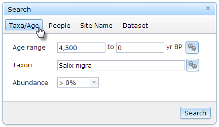
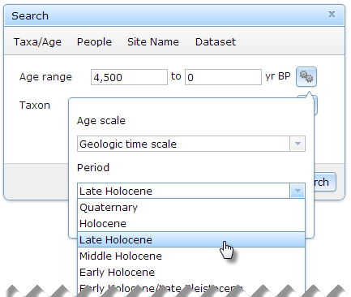
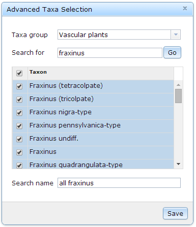

Purpose
|
find datasets that contain occurrences of one or more taxa; optionally, constrain to a range of time.
|
Examples
|
- Bison bison in the Late Holocene (4500 - 0 yr BP)
- All Salix nigra
- Any taxonomic name that contains "fraxinus"
|
Single taxon name
- In the Search window, click on the Taxa/Age button.

- In the Taxon text box, type a few letters of any part of a taxon name to bring up a list of suggestions, then select one.
- Optionally, enter a value for the oldest and/or youngest ages (years before present) to which to limit results. Note the order of the ages as indicated by the Age range text box placeholders...oldest is first.
For convenience, clicking the button to the right of the age range text boxes pops up a window that allows you to select a named age range from one of many common age scales/classifications systems. Selecting a period will automatically populate the age range boxes with the associated values.

- If you select a vascular plant species, a drop-down list labeled Abundance will be displayed. Abundance is the proportion of the selected species relative to all other species in a sample. Select a value to use as the minimum threshold of occurrence.
- Click the Search button or press ENTER on your keyboard to run the query.
Multiple taxa names and variations
Neotoma does not change or question identifications from original sources. Also, the database has a number of conventions for uncertainty in identification which is included in the taxon name. These include:
- cf. – Latin confer, which means compare. In taxonomy «cf. » generally means that the specimen compares well to or is similar to the type referred, but the identification is uncertain.
- aff. – «aff. » Latin affinis, which means having affinity with, but distinct from, the referred taxon. This designation is often applied to a taxon thought to be undescribed.
- ? – «?» is used to designate a questionable identification.
- Types – Many pollen taxa are designated as types, e.g. «Ambrosia-type». A type denotes a morphological type that is consistent with the referred taxon, but also includes other taxa that are palynologically indistinguishable.
- Alternative taxonomic designations – In some cases, fossil specimens of two taxa are indistinguishable and are more-or-less equally likely. The names can then be separated by a slash, e.g. «Ostrya/Carpinus», «Mustelidae/Mephitidae».
- Undifferentiated taxa – Lower taxonomic ranks may not be differentiated. The convention among palynologists is to specify these by the suffix «undiff. ». Faunal analysts customarily use the appellation «sp.» to designate undifferentiated taxa.
To deal with taxonomic uncertainty as well as ad-hoc groupings, Neotoma Explorer provides the Advanced Taxa Selection tool to search and select multiple taxa names to include in a query.
- Click the button to the right of the Taxon text box.
- Select the Taxa group that your taxa of interest belong to.
- In the Search for box, type any part of a taxon/taxa name you want to find, then click the Go button. Taxon names that contain your search string will display in the Taxa Matches table.

- Check the boxes next to individual taxon you want to include in your group.
- Type a Search name to label your search with in the Current Searches list.
- Click the Save button to return to the main Taxa/Age search window.
- Optionally, specify an Age range (step 3 section above).
- If you selected a plant Taxa group, select a minimum Abundance threshold to further refine your search. Currently, the threshold is applied to each individual taxon in the group--not to the group sum.
- Click the Search button or press ENTER on your keyboard to run the query.
Created with the Personal Edition of HelpNDoc: Free EPub and documentation generator